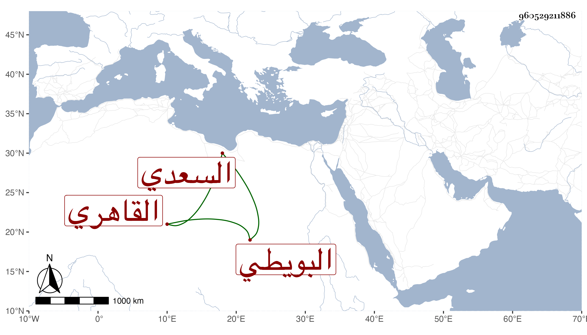

0902Sakhawi.DawLamic.ITO20230111-ara1.EIS1600.960529211886
Biography ID: 960529211886
693
علي بن أبي بكر نور الدين البويطي ثم القاهري كاتب العليق ووالد المحمدين الشمس وكريم الدين وآمنة أم قاضي الحنابلة البدر السعدي وحاج ملك أم سعد كاتب المماليك أم ابن العجمي . برع في غنون وكان يجتمع مع الزين عبد الرحمن بن السدار والشمس بن عثمان ناظر جامع المارداني وغيرهما من الأستاذين فيتذاكرون ما يعرفونه من الفنون ويستفيد كل منهم من الآخر ما عنده وكان لطيفا . مات بعد الثلاثين واستقر بعده في كتابة العليق أخو زوجته وزوج ابنته عبد القادر ابن أبي بكر البكري البلبيسي الماضي .
